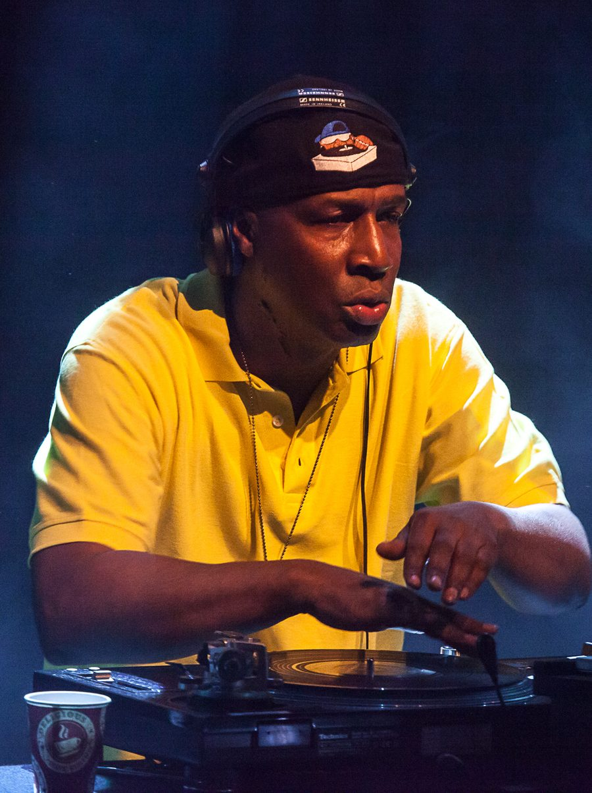

Grandmaster Flash, Amanda Blank & more added to Beck's Festival Bar


.jpg){kind=link}
Following this month’s announcement of what’s in story for us when the spectacular Sydney Festival returns in early 2010, including the hugely popular Beck’s Festival Bar at Hyde Park Barracks which has packed it out consistently year after year. The first round announcement included acts like DJ Yoda, Radio Clit, Breakestra and Severed Heads, but they’ve now revealed the second-round collection of artists who’ll be holding sway in January, and there’s some impressive names on there.
One of the biggest occasions will be the FBi Night on January 11, featuring one-time Spank Rock MC Amanda Blank who’s of course embarked on a solo career this year. Joining her on that evening will be Devlin & Darko, the DJ/producers who’ve worked with BBC Soundsystem and Spank Rock, as well as local hip hop ladies KillaQueenz.
The other big addition to the Beck’s Festival Bar lineup is veteran Grandmaster Flash, who’ll be playing alongside a massive lineup of hip hop names that includes Chasm, P-Money and more.
Full Beck’s Festival Bar 2010 lineup:
January 10 – Big Bad Voodoo Daddy, Black Joe Lewis & the Honeybears
January 11 – FBi Night: Amanda Blank, Devlin & Darko (BBC Soundsystem) & KillaQueenz
January 13 – Grizzly Bear, The Middle East
January 14 – Severed Heads, The Reels, Stephen Mallinder (Cabaret Voltaire) DJ Set
January 15 – Vieux Farka Touré (Mali), The Mess Hall, Dan Sultan
January 16 -Poirier feat. MC Zulu & Sista Itations, Uber Lingua DJs
January 20 – The Decemberists & Bridezilla
January 21 – Camera Obscura, The Slow Club, Popfrenzy DJs
January 22 – Trevor Jackson, Yen (live), Future Classic DJs
January 23 – Grandmaster Flash, Chasm & Vida-Sunshyne, P-Money
January 27 – DJ Yoda’s National Video Vacation, DJ Sampology
January 28 – FBI Night: The Very Best, Radio Clit, Ro Sham Bo DJs
January 29 -Breakestra, J-Rocc (Beat Junkies), Space Invadas, Soulshaker DJs
January 30 – Hit It and Quit It Australian Revue feat. Recloose & Frank Booker, Mad Racket DJs